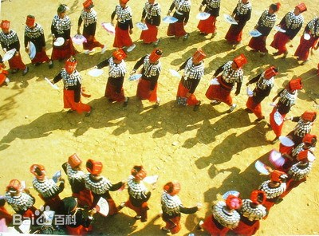

- 民族简介
- 文化习俗
- 历史发展
- 旅游介绍
景颇族
景颇族 景颇族，是中国的少数民族之一，有自己的语言和文字，语言属汉藏语系藏缅语族，5个支系语言分属景颇语支和缅语支，文字有景颇文和载瓦文两种，均为以拉丁字母为基础的拼音文字。 景颇族的来源与青藏高原上古代氐羌人有关，有“景颇”、“载瓦”、“勒赤”、“浪峨”、“波拉”5个支系，主要聚居在云南省德宏傣族景颇族自治州山区，少数居住在怒江傈僳族自治州与缅甸克钦邦接壤地区。缅甸境内的大部分克钦族支系与中国境内的景颇族、傈僳族也有极深的渊源 根据2010年第六次全国人口普查统计，景颇族总人口数为147828人。">
信仰
景颇族社会中并存着两种类型的信仰，一种是秉承传统的超自然信仰，另一种是外来的基督教和天主教信仰。
超自然信仰
超自然信仰是景颇族的传统宗教信仰，今天依然是大多数景颇人的宗教信仰。景颇族超自然信仰的精髓，是相信人类和万物都具有二重性质，即自然的和精灵的存在。景颇人认为，不仅人是有灵魂的生命实体，动物、植物以及自然界的日、月、山、川、风、雷、土地、巨石、山谷等自然物也都有灵魂。人的灵魂不仅归附肉体，还可以与人的肉体分离，并且能够支配生命。在正常状态下，人在睡眠时，灵魂会离开肉体四处游荡，梦是灵魂游荡遭遇的折射。在遭遇惊吓或自然力量侵害时，人的灵魂也会离开人的肉体，且不能自主复归，如果不举行叫魂仪式把离开的灵魂复归肉体，人便会死亡。人的灵魂在附着肉体的时候，除了对其所附着肉体的生命有支配能力以外，不会对他人造成危害。这个时候的灵魂称为“色彪”（载瓦语）。景颇族认为灵魂不灭，灵魂不会因为肉体的消亡而灭亡，肉体消亡后，灵魂会去到另外一个世界，变成具有作祟功能的鬼灵，景颇语称为“纳特”。日、月、山、川、风、雷、土地、巨石、山谷等自然之物的灵魂，都是具有作祟功能的鬼灵。
基督教和天主教信仰 20世纪初叶，基督教与天主教先后于传入景颇族地区。 20世纪50年代中期以前，景颇族地区的基督教分属浸礼会、内地会和神召会等3个教派，主要从属于缅甸教会管理。20世纪50年代中期，景颇族地区的基督教接受了云南省基督教三自爱国运动委员会领导，并挂靠上海基督教浸礼会至今。 天主教于1930年开始传入景颇族地区 。
建筑
景颇族多数居住在海拔1500米左右的半山腰或山间的小平地，少数居住在坝区边缘地带。一般村寨规模大多在40至60户之间，上百户的村寨屈指可数。村寨一般依山而建，面向坝子和河谷，靠坝一端，称为“寨脚”，靠山一端称为“寨头”。过去，寨头、寨脚都有标志，寨脚的标志是进村道路两旁用木柱简单搭建的寨门，寨头的标志是在村寨通往山顶小路旁的某一种自然物，可以是石头、大树或树桩。寨门前有一片被严禁砍伐的树林，林中设有村寨进行集体祭祀的“能尚”（景颇语，汉语称为“官庙”）。除“能尚”所在神林外，村寨周围被作为水源林的森林，也禁止砍伐，植被保存良好。 村寨内房屋建盖分散，户与户之间相距几十米甚至百米，一幢幢楼宅隐现在苍林翠竹丛中。房屋多建盖在山坡平整出来的台地上，同姓氏家户的住宅分布相对集中，从一个老家分出的各个小家都在老家住宅旁建房，除非老家附近已经没有建盖地点才另择新址建盖。
传统民居多为竹木结构的草房，过去只有少数地方的山官、头人才有瓦房。房屋均为长方形，分上下两层，下层距离地面高度1至2米，用于堆放薪柴、农具并饲养猪、鸡。上层住人，用竹隔成若干间，每间设有一个火塘，除炊事的火塘外，火塘四周就是家人歇息的地方。房屋框架除柱子外，基本都用竹子做成，用藤条绑扎，屋顶以茅草覆盖，墙面和地板均用竹子编织或剖开铺成。这种草房一般七八年就须重新建盖，建房时全寨换工互助，数日即成。今天，随着经济的发展，传统的竹木结构的草顶房屋已很少见，多数房屋的建筑材料和样式都发生了改变，出现了全木构架或土坯砌墙的瓦顶、铁皮顶楼房和砖混结构的平房 。
服饰
景颇族服饰风格独特。男子服饰以黑、白为主色，老 年男子服饰各支系相同，均着黑色对襟短衣和黑色宽管长裤，戴黑色包头。中、青年男子服饰，景颇支系与其他支系间存在细微差别，上身内穿白色立领衬衣、外套黑色圆领外衣，下身穿黑色长裤，头戴红蓝色相间的方格棉纱布圆筒形头巾。其他几个支系的中、青年男子，均着白色衬衣，黑色长裤，戴饰有各色绒球缨穗的白色包头。无论哪个支系的男子出行，均随身背挎筒帕（即背包）和长刀。
饮食
景颇族主食以大米为主，竹筒饭、鸡 肉稀饭是景颇人喜爱的特色主食。 菜肴以辣著称，品种除园地中种植的瓜、豆、芋头、青白菜之外，从山林中采集的野菜、野果也是餐桌上的家常菜。 烹饪方式包括舂、烧、烤、煮、蒸、拌、揉等几种类型，其中，舂菜是景颇族菜肴中最具特色的一种，味道鲜美独特，景颇人常说：“舂筒不响，吃饭不香” [2] 。
历史
据历史传说和汉文史籍记载，从古代起，景颇族的先民就劳动生息在康藏高原南部景颇族称为木转省腊崩（意为“天然平顶山”）的山区，约自唐代始沿横断山脉南迁至云南西北部、怒江以西的地区。这个地区汉代属永昌郡，唐代属南诏政权的镇西节度管辖。该地的居民包括景颇族先民在内，被称作“寻传蛮”。当时的寻传人居住在山野森林中，持弓挟矢，从事狩猎生活。 继南诏、大理政权之后，元代在云南设立行省，寻传地区属于云南行省管辖。随着生产的发展，景颇族各部逐渐形成茶山、里麻两个大的部落联盟，产生了从原始农村公社分化出来的世系贵族山官。社会开始分裂为最初的三个等级：即官种（贵族）、百姓和奴隶。等级之间界限严格，“南瓜不能当肉，百姓不能当官”。奴隶随主姓，从事各种劳役，无人身自由。 15世纪初，明朝在这里推行土司制度，设立了里麻、茶山两个长官司，任命景颇族山官为长官。茶山长官司先属金齿军民指挥使司，后属永昌卫，继改属腾冲府管辖；里麻司直属于云南都司。清代，景颇族地区属清朝所设置的有关府州县管辖。 16世纪以后，大量景颇族迁移到德宏地区。在汉族和傣族先进生产技术和封建经济影响下，景颇族开始有了犁耕农业，使用了较先进的铁质农具。以后又学会种水田，生产力进一步提高，封建因素逐渐发展起来。由于内部封建因素的发展，奴隶又不断反抗逃亡，同时受汉族和傣族封建制度的影响，奴隶制迅速没落。
在封建因素产生过程中，由于傣族土司的控制和分化，虽然有些地区的山官以村社首领的身份，篡夺了村社土地的最高权力，开始向封建领主制转化，但并未形成完整的领主制。同时，随着社会内部生产的缓慢发展，固定耕地面积增加和汉族地主经济的影响，各地景颇族社会不同程度地保留了各个社会发展阶段的因素，形成社会经济的多结构状态，但基本均进入了封建社会的初期。由于这种嬗变，上层建筑特别是文化和意识形态落后于经济结构的发展变化，因此，景颇族社会在向阶级社会过渡的同时，保留了较多的农村公社的残余。
新中国成立前夕，景颇族社会已发展到农村公社趋于解体和向阶级社会过渡的阶段。在保留了较多原始公社制残余的同时，出现了阶级分化。20世纪50年代以前，景颇族社会已经分化出约占总户数1%的地主和2%的富农，他们占有全部水田的20%到30%以及20%的耕牛。农民中除占总户数15%的左右的农户占有部分水田、耕牛外，80%以上的农户都是无田少地、缺乏耕牛和农具的贫苦农民。景颇族人民一方面既受国民党政府和傣族封建领主土司的统治，也受其社会内部相对独立的山官的统治。国民党政府和傣族土司通过山官实现其统治，他们通过山官压迫景颇族人民，强征各种苛捐杂税，景颇族人民过着民不聊生的生活。 新中国成立后，党和国家在景颇族地区实行了民族区域自治，在景颇族地区进行了“直接向社会主义过渡”的民主改革，废除了山官制度，景颇族人民实现了当家作主的愿望，社会、经济、文化和生活都发生了翻天覆地的变化，昔日贫穷落后的景颇山呈现出了欣欣向荣的繁荣景象。
历史上，景颇族人民为维护祖国统一进行过英勇斗争，为捍卫祖国神圣领土完整和开发建设西南边疆作出了重要贡献。1875年，在有名的马嘉理事件中，景颇族人民击毙窃取中国情报的英国间谍马嘉理，阻击了英国军官柏朗率领的侵略军，打击了侵略者的气焰。1898年中英两国勘定陇川边界时，景颇族山官早乐东在人民群众的支持下，据理抗击，粉碎了英帝国主义者侵占中国领土的野心。1910年，英国侵略军2000多人侵占中国景颇族聚居的片马、古浪、岗房地区，激起景颇族人民的强烈反抗，进而在云南全省掀起了反英运动，组织“中国保界会”，终于迫使英政府承认片马、古浪、岗房是中国领土。抗日战争时期，景颇族人民积极参加抗日游击队，用长刀、斧子、铜炮枪奋起抵抗侵入滇西的日本侵略军，为保卫祖国立下了功劳。
云南景颇园
距离陇川县城章凤约2千米，坐落于广山景 颇山寨，是一个以景颇族文化体验为主的综合旅游区，总占地面积28.5公 顷。
2000年重新包装改造，2001年10月正式列为集民族文化展示、民俗 活动、休闲娱乐、特色餐饮、旅游观光、购物于一体的乡村旅游、农家 乐景点，是德宏州内的精品旅游景点之一，是以保护和发展景颇族文化 为项目建设理念，让游客了解景颇族文化和体验景颇族生产生活的主题园。